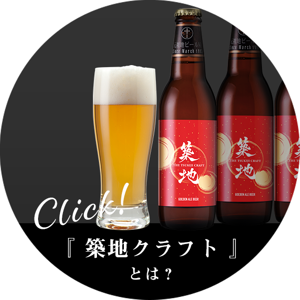

- 201812月発行の漫画「本当にあった笑える話(2019年1月号)」に掲載いただきました！ 11月9日に関西テレビ『新説所JAPAN』に取材いただきました！ 12月17日に関西テレビ『新説！所JAPANにて放映（予定）
- 20191月～東京ベイネットテレビにて新年のご挨拶放映（予定）
乾杯サポーターとは?

サンクトガーレン×Baccanale
共同開発
共同開発
築地クラフト登場

代表の想い
最後までご覧いただきありがとうございます！
築地のイベントクリエイティブカンパニーの代表を務めております、
株式会社ビックウエストの代表 大西裕樹です。
イベント業という職業柄、残業や徹夜も多い私の唯一の楽しみこそが、
「スタッフと仕事終わりに”築地で乾杯すること”」でした。
築地がもつ下町の風情や情緒あふれる街並み、そしてそこで働く人たちの人情や活気。
築地はどこか懐かしく、どんな時も我々を迎え入れ、次に向かうエネルギー与えてくれました。
この雰囲気や温かみは、他の場所では決して味わうことのできない築地の魅力であり、貴重な日本の資源であると私は確信しています。
自分達の力だけでは、まだまだ小さいイベントプロダクションに過ぎませんが、みなさんと一緒に盛り上げることで、継続した取り組みができる。 そして2020年やその後にむかって、築地や東京、日本全体を盛り上げていくことにつながっていくと、私は思っています。
築地に一度お越しになったことがある方はもちろん、
まだの方もぜひ「エール」をお願いいたします！
築地のイベントクリエイティブカンパニーの代表を務めております、
株式会社ビックウエストの代表 大西裕樹です。
イベント業という職業柄、残業や徹夜も多い私の唯一の楽しみこそが、
「スタッフと仕事終わりに”築地で乾杯すること”」でした。
築地がもつ下町の風情や情緒あふれる街並み、そしてそこで働く人たちの人情や活気。
築地はどこか懐かしく、どんな時も我々を迎え入れ、次に向かうエネルギー与えてくれました。
この雰囲気や温かみは、他の場所では決して味わうことのできない築地の魅力であり、貴重な日本の資源であると私は確信しています。
自分達の力だけでは、まだまだ小さいイベントプロダクションに過ぎませんが、みなさんと一緒に盛り上げることで、継続した取り組みができる。 そして2020年やその後にむかって、築地や東京、日本全体を盛り上げていくことにつながっていくと、私は思っています。
築地に一度お越しになったことがある方はもちろん、
まだの方もぜひ「エール」をお願いいたします！
SHOP INFO
address: ○○○○○○○○○○
mail: ○○○○○○○○○○
TEL: ○○○○○○○○○○
MAP: ○○○○○○○○○○
mail: ○○○○○○○○○○
TEL: ○○○○○○○○○○
MAP: ○○○○○○○○○○
JOIN US
調理スタッフ / ホールスタッフ募集中
詳しくはTELでご連絡ください
(03-6264-7373 Baccanale採用担当まで)

©2018 tsukiji.love/baccanale/